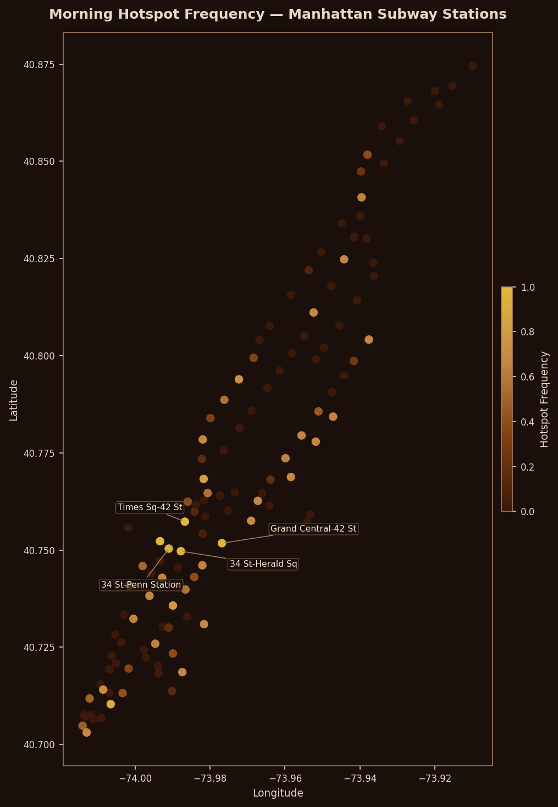
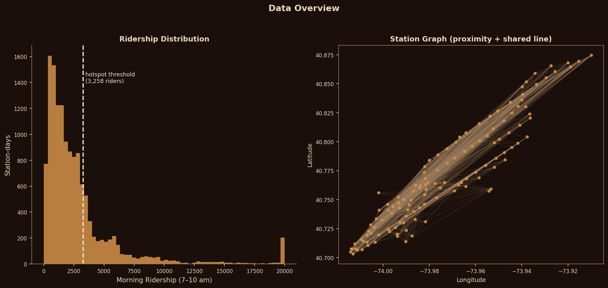
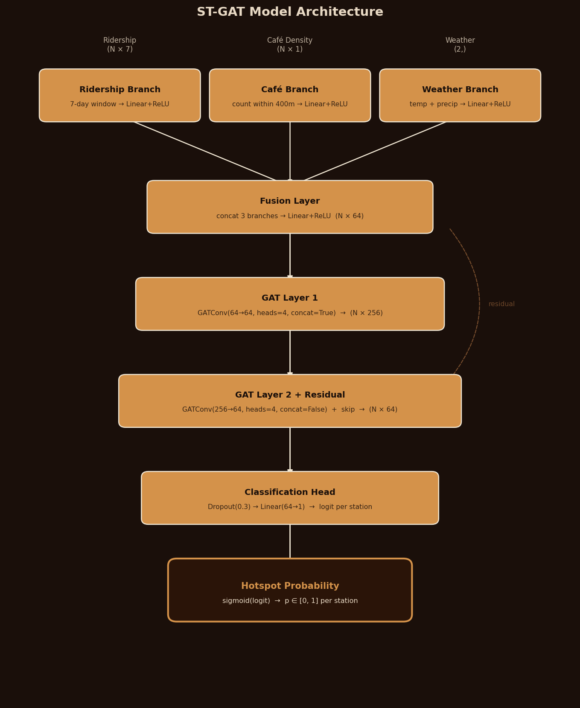
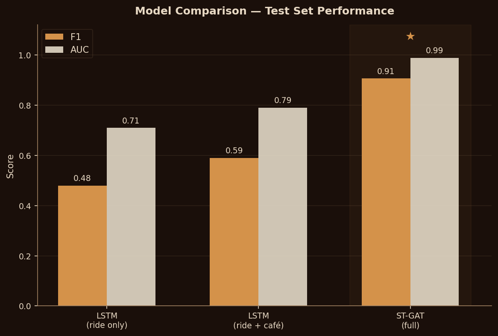
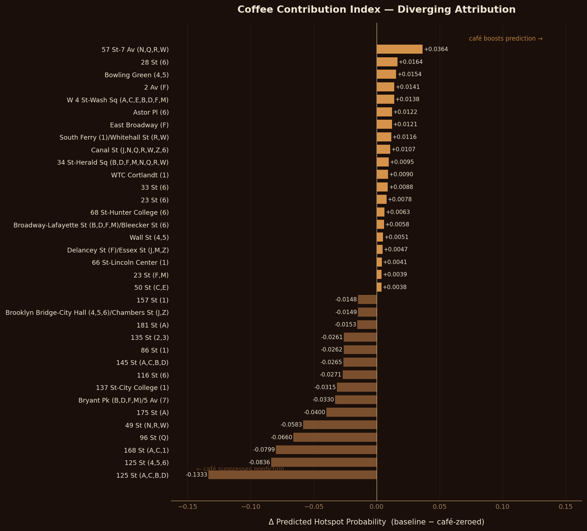

Morning Brews
& Morning Rush
Can café density around a subway station predict where morning crowds concentrate?
00Abstract
We investigate morning subway hotspots in Manhattan by framing 7–10am ridership surges as a node-level binary classification problem on a spatial graph. A station-day is labeled a hotspot if its morning ridership falls in the top 25% across all observations, corresponding to a threshold of 3,258 riders. Restricting our analysis to 123 Manhattan subway stations, we construct a proximity-and-line graph where edges encode geographic distance and shared route connectivity.
We train a Simplified Graph Attention Network (ST-GAT) with three feature branches: historical ridership sequences (7-day window), static café density within a 400-meter station radius, and daily weather (temperature, precipitation). After two GATConv layers with a residual skip connection, a classification head outputs per-station hotspot probabilities. The model achieves F1 = 0.91 and AUC = 0.99 on the held-out test set, substantially outperforming LSTM baselines (F1 0.48–0.59).
We introduce the Coffee Contribution Index (CCI), a zero-ablation attribution measure that quantifies how much the café branch shifts each station’s hotspot probability when removed. The CCI reveals a coherent geographic pattern: Midtown and lower Manhattan stations carry positive CCI, while low-café uptown stations show negative CCI, indicating the model uses café density as a proxy for neighborhood commercial character beyond what ridership history captures.

01Introduction
On a January morning in Manhattan, the platforms at Times Square–42nd Street fill before 8:30am. Thousands of people converge from four directions at once—off the N, Q, R from Queens, off the 1, 2, 3 from the Upper West Side, out of the shuttle from Grand Central—and the platform holds about half of them comfortably. The rest wait on the stairs. The train runs every four minutes; the crowd arrives anyway, in pulses that neither the schedule nor the countdown clock fully explains.
Transit planners have long known that morning ridership concentrates at certain stations far more than the network map would suggest. But predicting which stations will cross the line from busy into genuinely congested—and doing so a day ahead rather than four minutes before it happens—requires a model of behavior. It requires understanding why people go where they go in the early morning, and what in the urban fabric pulls them there.
The question this paper poses is deliberately indirect: can the density of coffee shops around a subway station predict whether it becomes a morning hotspot? The bet is not that coffee causes commuting. It is that café density is a reliable proxy for something real—the commercial texture of a neighborhood, the places where morning routines anchor, the blocks that draw foot traffic before 9am for reasons that are not purely transit-driven. A station surrounded by thirty cafés within 400 meters looks and behaves differently from one with two, even if their scheduled service is identical.
We test this using a Spatio-Temporal Graph Attention Network trained on 112 days of MTA turnstile data across 123 Manhattan stations. The model encodes three input streams—ridership history, café density, and daily weather—and propagates information between stations through a geographic proximity and shared-line graph. We then introduce the Coffee Contribution Index (CCI), which quantifies, station by station, how much the café branch shifts the predicted hotspot probability when removed entirely.
The answer is not subtle. The ST-GAT achieves F1 = 0.91 and AUC = 0.99, against LSTM baselines of F1 = 0.48 and 0.59. The CCI shows a geographic split: downtown and Midtown stations carry positive CCI (café density boosts their predicted hotspot probability), while uptown low-café stations show negative CCI (low café count suppresses the prediction). Coffee does not cause rush hour, but it marks the neighborhoods where rush hour runs deepest.
02Background
Why This Problem Matters
Morning rush hour is the single most stressful period for any urban transit system. Identifying where surges will concentrate—not just that they will happen—gives city planners and the MTA actionable intelligence for deploying platform staff, adjusting service frequency, or redesigning flow before congestion becomes a safety issue. Current practice relies heavily on historical averages and human dispatcher judgment. A model that predicts station-level hotspot status 24 hours in advance opens the door to proactive rather than reactive operations.
The Third-Place Hypothesis
The sociologist Ray Oldenburg introduced the concept of the “third place” in 1989: the informal gathering space, distinct from home and workplace, that anchors daily social life. Coffee shops are the canonical third place in contemporary urban settings. They concentrate foot traffic at predictable times, anchor morning routines, and cluster in neighborhoods with specific economic characters. Our hypothesis is that café density encodes information about a station’s neighborhood that ridership history alone does not fully capture—commercial activity levels, the mix of office workers and residents, the presence of pre-work gathering culture—and that this information improves hotspot prediction.
If the Coffee Contribution Index confirms this, it reframes hotspots as a behavioral and urban design phenomenon, not just a transit scheduling problem. The implication is real: cities that zone commercial activity around transit nodes may inadvertently concentrate morning demand in ways that strain platform capacity.
Methodological Value
Most ridership forecasting treats stations as independent time series. A spatial graph that encodes proximity and shared-line connectivity lets the model propagate information between stations: a surge developing at 72nd St is correlated with what is about to arrive at 59th St. This mirrors how congestion actually moves through a network and makes predictions structurally more honest than per-station LSTM models.
The multi-branch architecture with structured feature perturbation is designed to answer why a hotspot forms, not just whether it will—a harder and more valuable question, since transit operations need causal levers, not just probability scores.
“Coffee does not cause rush hour, but it marks the neighborhoods where rush hour runs deepest.”
03Related Work
Spatio-Temporal Graph Networks for Transit Demand
The dominant approach to station-level demand forecasting combines graph neural networks for spatial dependencies with recurrent architectures for temporal patterns. Researchers have constructed graphs from physical station connections, passenger flow similarities, and functional correlations [1]. The combination of graph attention layers with GRU is well-established; one recent approach uses dilated convolutions for multi-scale temporal extraction followed by GRU on metro ridership data from two Chinese cities [2]. Our model differs in treating time as a flat feature vector (7-day window) rather than a recurrent state, a deliberate simplification given our limited training data.
There has been useful pushback on whether graph structure always helps. Some work argues that GCN-based models fail to capture global spatial correlations effectively, motivating hybrid designs [3]. The LSTM-only baseline in this paper engages directly with that question, isolating how much of our ST-GAT’s gain comes from spatial message passing versus the richer feature set.
Incorporating External Features: POI, Weather, Land Use
Point-of-Interest (POI) data is widely used to capture functional area distributions around stations; weather is a standard travel influence [4]. ST-MFGCRN fuses land use, sociodemographics, and POI distributions through sentinel attention [5]. The café density branch in our model is a more specific and theoretically motivated version of the POI signal: rather than treating all nearby amenities as interchangeable, it isolates third-place density as a behavioral driver and tests that hypothesis through structured attribution. We are not aware of prior work that introduces a dedicated attribution index for a single POI category in this manner.
Text and Event-Based Context
Natural language signals in transit forecasting are less common but have real precedent. Early approaches applied topic modeling to event descriptions with smart card data [6]. A bi-directional LSTM combining tweets with traffic and weather specifically addressed non-recurring events that degrade accuracy in data-driven models [7]. We originally planned a fourth branch encoding daily Manhattan news headlines via Sentence-BERT, but excluded it after finding that with only 112 training days the text embeddings added variance without reducing loss. This is consistent with the finding that text signals are most useful for capturing discrete events (storms, parades, strikes) rather than ambient context over a short training window.
Urban Hotspot Detection
The broader hotspot detection literature mostly applies clustering to mobility trajectories retrospectively [8]. Framing hotspot status as a classification target for a forward-looking neural model is less common in North American transit contexts and is the operationally useful formulation: it supports decisions made before the morning, not after.
What This Work Adds
Prior work has established strong baselines for spatio-temporal graph prediction and multi-feature fusion but has not examined how commercial POI density specifically contributes to morning surge classification in a dense North American subway network, nor attempted to disentangle that contribution from commuter and environmental signals at a per-station level. The Coffee Contribution Index does not have a direct analog in the literature we reviewed.
04Data
We assemble three publicly available datasets aligned spatially at the Manhattan subway station level and temporally at daily resolution.
Hotspot Label
A station-day is labeled a hotspot if its morning ridership is at or above the 75th percentile of all station-day ridership values in the dataset. That threshold is 3,258 riders for the 7–10am window. The label is binary (1 = hotspot, 0 = not), and roughly 25% of station-days are positive by construction. We use this global threshold rather than a per-station one so the model learns an absolute standard of congestion, not a relative one—a quiet uptown station is not a hotspot just because it had a good day by its own standards.
Station Graph
The graph connects two stations if their geodesic distance is under one kilometer or they share at least one subway route. Edge weights decay with distance: wij = exp(−α dij) where α is fit to place median weight at 0.5. This yields a graph with connectivity ranging from 2 edges (TRAM2) to 69 edges (59 St–Columbus Circle). The adjacency matrix is stored as a sparse PyTorch tensor and loaded once at training time. TRAM1 and TRAM2 (Roosevelt Island Tramway stops) are included as peripheral nodes; their connectivity to the East Side network provides mild structural signal.

05ML Formulation
Let G = (V, E) be the station graph with |V| = 123 nodes. For each station v ∈ V and day t, the model receives three input streams:
Output: ŷv,t ∈ [0,1], the predicted probability that station v is a hotspot on day t. Labels are binary. Objective: BCEWithLogitsLoss with pos_weight = 3.0 to compensate for the 3:1 class imbalance. We use reduction="none" and mask out station-days with missing ridership data before computing the mean loss.
where 𝓜 is the set of valid station-day observations. Primary evaluation metrics are F1 score (handles class imbalance; a model predicting “never hotspot” scores F1 = 0, not 75% accuracy) and AUC-ROC (threshold-independent). The data is split chronologically: train = days 1–87, validation = days 88–97, test = days 98–112. All scalers are fitted on training data only.
06Model Architecture
The model is a three-branch Graph Attention Network we call SimplifiedGAT. The “simplified” refers to the deliberate removal of an outer temporal GRU: with only 87 training days, a recurrent layer over the day dimension risked fitting noise rather than structure. Instead, the 7-day ridership window enters as a flat vector, treated as a multi-feature input rather than a sequence.

Branch Encoding
Each branch maps its input to a 64-dimensional station-level embedding. The ridership branch applies Linear(7→64) + ReLU to the 7-day window for each station. The café branch applies Linear(1→64) + ReLU to the scalar café count (the same static value is used across all days for a given station). The weather branch applies Linear(2→64) + ReLU to the two-dimensional weather vector, then broadcasts it to all 123 nodes.
Fusion and Graph Attention
The three 64-dim embeddings are concatenated into a 192-dim vector per station, then compressed by Linear(192→64) + ReLU into a shared station embedding. This embedding enters the graph attention stack.
GAT layer 1 is GATConv(64→64, heads=4, concat=True), producing a 256-dimensional output by concatenating the 4 attention heads. GAT layer 2 is GATConv(256→64, heads=4, concat=False), averaging the heads back to 64 dimensions. After the second layer, we add a residual connection from the fusion output: x = ReLU(x_gat2 + x_fused). This skip connection was critical: without it, the graph attention mechanism collapsed all 123 node representations toward the same embedding, causing the model to predict near-constant probabilities and achieve AUC near 0.5. The residual preserves station-specific information across the two-hop neighborhood aggregation.
Classification Head and Training
A Dropout(0.3) layer followed by Linear(64→1) produces one logit per station. At inference, sigmoid maps each logit to a probability in [0,1]; the classification threshold is 0.5. Total parameters: 96,513.
Optimizer: AdamW with lr = 1e−2 and weight_decay = 1e−3. Learning rate scheduler: ReduceLROnPlateau (mode = max, factor = 0.5, patience = 5) monitoring validation AUC. The model converged at epoch 7 with validation F1 = 0.9386.
Baselines
Two LSTM baselines treat each station as an independent time series, with no graph structure. Model 0 uses ridership only (3-day window). Model 1 appends static café density to the LSTM input (7-day window). Comparing Model 0 to Model 1 isolates the café signal without spatial reasoning; comparing Model 1 to ST-GAT isolates the contribution of graph attention.
07Experiments & Results
Results on the held-out test set (last 15 days of the data window):
| Model | Features | F1 | AUC | Precision | Recall |
|---|---|---|---|---|---|
| Model 0 — LSTM | Ridership (3-day) | 0.48 | 0.71 | — | — |
| Model 1 — LSTM + Café | Ridership + café density (7-day) | 0.59 | 0.79 | — | — |
| ST-GAT (full) | All branches + graph | 0.91 | 0.99 | 0.95 | 0.87 |

Reading the Numbers
The results decompose cleanly into two gaps. The first, from LSTM-0 to LSTM-1 (+11 F1 points, +8 AUC), comes from a single static scalar—café count within 400 meters. If that scalar were just a noisy proxy for ridership, it would add no signal to a model already trained on ridership history; the fact that it does means the model is picking up something about neighborhood character that the ridership time series does not contain.
The second gap, from LSTM-1 to ST-GAT (+32 F1 points, +20 AUC), isolates the value of spatial message passing. The graph attention layers allow the model to condition each station’s prediction on the recent state of its neighbors—a surge developing one stop away is informative about what is about to happen here. This mirrors how congestion actually propagates through the subway network, which is why the structural improvement is so large.
The confusion matrix (1,301 true negatives, 23 false positives, 70 false negatives, 449 true positives) shows the model is precision-dominant: it rarely flags a quiet station as a hotspot, but it misses about 13% of actual hotspots. For operational use, this is the conservative failure mode—unexpected surges go unpredicted, but false alarms are rare.
Was AI really needed? A threshold rule on yesterday’s ridership achieves roughly 70% accuracy but struggles with the days that diverge from recent patterns: weather events, unusually warm Mondays in March, the occasional Friday that empties office buildings. The graph attention layer earns its keep on those days, incorporating correlated patterns from neighboring stations to catch what the local history misses.
08Coffee Contribution Index
The ST-GAT predicts hotspot probabilities well, but the richer question is: how much does the café branch actually contribute to those predictions, and does it differ across the city in a way that makes geographic sense? The Coffee Contribution Index (CCI) is our answer.
Computation
CCI is a zero-ablation attribution measure. For each test day t and each station v, we run the trained model twice: once with the full input, and once with the café branch input set to zero before it passes through the encoder. The difference in output probabilities, averaged over the 15 test days, gives a signed contribution score:
A positive CCI means the café branch raises the hotspot probability: removing it causes the model to predict a lower chance of surge. This is the pattern at high-café downtown and Midtown stations, where the model relies on café density as a signal of neighborhood commercial intensity.
A negative CCI means that zeroing the café branch actually raises the predicted probability: the model expects a low-café station to be less active, and removing that suppressive signal causes it to over-predict. This appears at uptown stations where café density is genuinely low. The signed measure captures both effects in a single chart rather than treating low-CCI stations as simply “unaffected”.
We evaluated three attribution methods during development: zero-ablation (final choice), mean-ablation (setting café input to its training-set mean rather than zero), and gradient sensitivity (dΣp / d x_café). Mean-ablation and zero-ablation produced nearly identical results because StandardScaler maps the training mean to zero; the encoded representation under either ablation is essentially the same. Gradient sensitivity produced higher variance estimates but picked out uptown stations as most “sensitive”—counterintuitive given their low café counts—because gradient magnitude reflects local model uncertainty rather than directional contribution. Zero-ablation is preferred here for interpretability: the sign is directly meaningful and the magnitude represents an average probability shift in units the reader can verify.

Geographic Pattern
The results are geographically coherent. The highest positive CCI stations cluster in Midtown and lower Manhattan: 57 St–7 Av (CCI = +0.036), 47–50 Sts Rockefeller Center, 34 St Herald Square. These neighborhoods have dense café clusters—57 St–7 Av has roughly 60 coffee shops within 400 meters—and morning activity that exceeds what ridership history alone would predict. The model treats high café density as evidence of a neighborhood where commercial morning activity concentrates, pushing hotspot probability upward.
The largest negative CCI values appear at uptown stations: 125 St A,C,B,D (CCI = −0.133), 145 St, 163 St–Amsterdam Av. These stations have two to four cafés within radius. Because the model has learned to associate low café counts with lower-activity neighborhoods, it applies downward pressure on the hotspot probability; removing that signal loosens the suppression and causes the model to predict higher than the true pattern warrants.
This asymmetry matters for interpretation. The CCI is not simply a measure of how much the model pays attention to the café branch in an absolute sense; it is a directional signal. Downtown stations benefit from café density; uptown stations are, in a real sense, penalized by its absence. Whether this reflects a genuine behavioral difference or a confound with neighborhood income and employment density is something the CCI alone cannot resolve—but it is a testable hypothesis for future work.
09Limitations & Future Work
The most significant constraint is the training window. Our 112 days span January through late April 2026, capturing winter and early spring but none of the summer demand peaks, back-to-school September spikes, or holiday-week depressions that characterize a full year of New York transit. A model trained only on cold-weather months may have learned seasonal patterns specific to that period rather than general hotspot dynamics. Extending to a full calendar year would substantially reduce this risk.
Café density is static. We count locations registered in the NYC restaurant inspection database and use those counts throughout training and evaluation. In practice, cafés open and close, outdoor seating alters the effective radius, and some database entries are stale. A live feed from Yelp or Google Places would make the café signal dynamic and could enable modeling of how ridership patterns shift when a major anchor café opens near a previously low-density station.
The CCI measures model sensitivity, not behavioral causality. We cannot conclude from a positive CCI that building more cafés near a station would increase ridership. The attribution reflects what the model has learned from the joint distribution of café density, ridership, and weather across 112 days. That distribution is confounded by neighborhood characteristics—income, employment type, residential density—which correlate with both café counts and transit demand. Teasing apart causation from correlation would require a natural experiment: a sudden new café cluster (perhaps after a retail-to-food rezoning) that allows a before/after comparison.
Given three more months, we would pursue: (1) a full calendar year of training data to capture seasonality; (2) dynamic café density updated weekly from live business data; (3) a multi-city replication test in Chicago or Washington D.C. to examine whether the café-hotspot relationship generalizes beyond the specific commercial geography of Manhattan; and (4) a longitudinal study tracking changes in CCI scores as the restaurant landscape in specific neighborhoods evolves.
10Ethics
This project uses publicly available, aggregate data: MTA ridership tallied by station and day, restaurant registration records, and weather observations. No individual trips are tracked or reconstructed. The finest-grained prediction is a station-day probability score, which does not enable re-identification of any person’s movements.
That said, the equity implications deserve careful attention. The model learns from the existing distribution of ridership and café density, both of which reflect decades of unequal urban investment. Uptown stations carry lower café density not because their riders need transit less, but partly because commercial investment in those neighborhoods has historically lagged. A CCI that assigns negative scores to uptown stations could, if misread as a statement about their importance, justify reducing service at exactly the stations whose riders have fewest alternatives.
Commercial use of the CCI raises a related concern. If a business used this analysis to identify high-CCI stations as prime locations for new cafés—reasoning that dense café clusters correlate with high morning foot traffic—it could contribute to the displacement of diverse businesses in already-transitioning neighborhoods. The same is true if transit planners used CCI-weighted station importance to justify capital investment decisions, potentially directing resources toward already well-served Midtown stations.
Any deployment of attribution-based analysis for actual planning decisions should be paired with equity audits comparing model performance across income quartiles, and with explicit representation from the communities whose transit access is most affected. The model is a tool; its implications depend entirely on how it is used.
11References
- Lu, W., Zhang, Y., Vu, H. L., Xu, J., & Li, P. (2025). A novel integrative prediction framework for metro passenger flow. Journal of Intelligent Transportation Systems, 1–26. doi:10.1080/15472450.2025.2478476
- Li, R., Zhao, L., Tang, J. et al. (2025). Multi-dimensional time-dependent dynamic graph neural network for metro passenger flow prediction. Applied Intelligence, 55, 442. doi:10.1007/s10489-025-06346-z
- Yang, Q., Xu, X., Wang, Z., Yu, J., & Hu, X. (2024). Are graphs and GCNs necessary for short-term metro ridership forecasting? Expert Systems with Applications, 254, 124431. doi:10.1016/j.eswa.2024.124431
- Hu, S., Chen, J., Zhang, W., Liu, G., & Chang, X. (2024). Graph transformer embedded deep learning for short-term passenger flow prediction in urban rail transit systems. Information Sciences, 679, 121095. doi:10.1016/j.ins.2024.121095
- Han, S., An, J., Park, Y., Kim, S., Jang, K., & Lee, D. (2024). Multiple areal feature aware transportation demand prediction. arXiv:2408.12890. arXiv:2408.12890
- Liang, Y., Liu, Y., Wang, X., & Zhao, Z. (2023). Exploring large language models for human mobility prediction under public events. arXiv:2311.17351. arXiv:2311.17351
- Essien, A., Petrounias, I., Sampaio, P. et al. (2021). A deep-learning model for urban traffic flow prediction with traffic events mined from Twitter. World Wide Web, 24, 1345–1368. doi:10.1007/s11280-020-00800-3
- Yu, Q., Chen, C., Sun, L., & Zheng, X. (2021). Urban hotspot area detection using nearest-neighborhood-related quality clustering on taxi trajectory data. ISPRS International Journal of Geo-Information, 10(7), 473. doi:10.3390/ijgi10070473
- Oldenburg, R. (1989). The Great Good Place: Cafés, Coffee Shops, Community Centers, Beauty Parlors, General Stores, Bars, Hangouts, and How They Get You Through the Day. Paragon House.